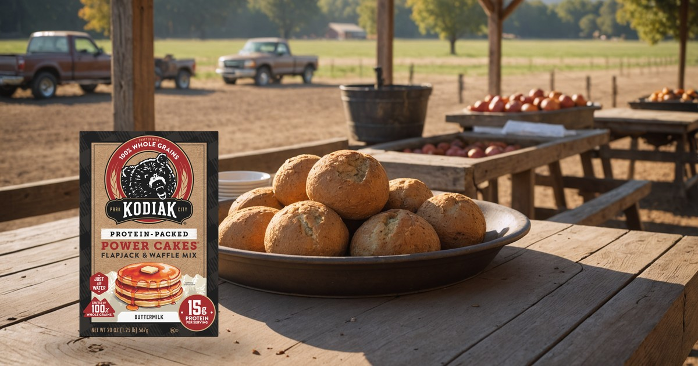
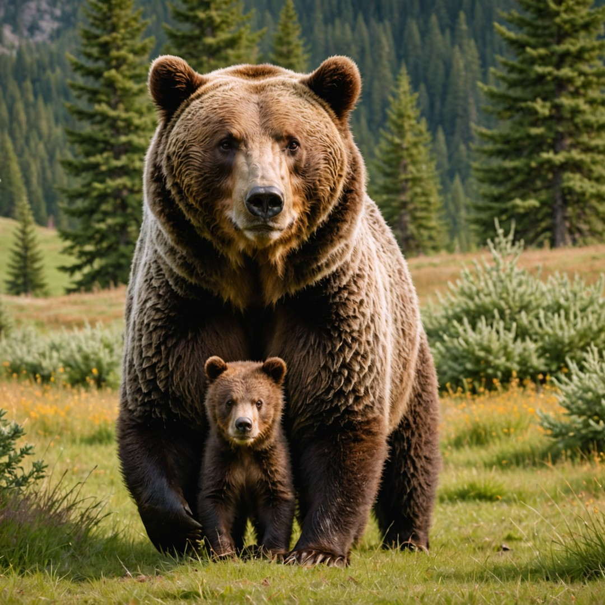
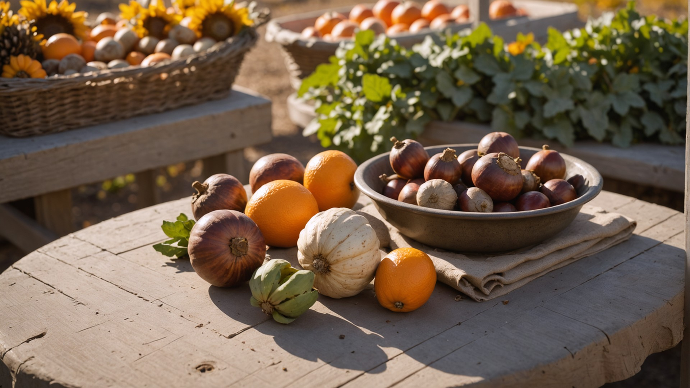
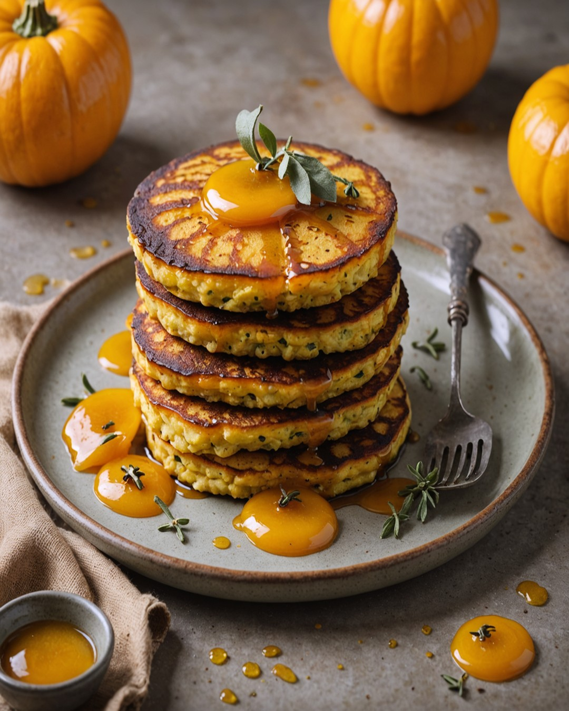
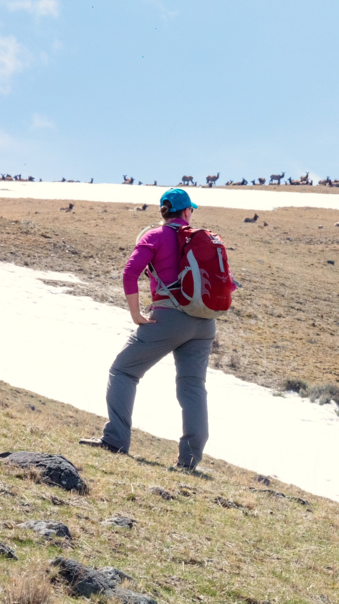

Nationwide campaign — market is an optional localization anchor.
 Official partner mark
Official partner mark
Loading past assets…
Acorn and butternut from the Oakley farmstand, Jensen Farms peaches while September lasts, elk bugling off Weber Canyon Road at dawn — one cup of Power Cakes, and this aspen-gold Wasatch Back morning generates in all five sizes.





Park City example — Winter Squash Griddle Cakes for a Wasatch Back morning. Oakley farmstand goods: acorn and butternut squash, honey, cinnamon, eggs, milk — plus Jensen Farms peaches in season Jun–Sep at the Park City Farmers Market. September around Oakley: quaking-aspen gold mid-to-late month, Gambel oak copper, elk rut bugling dawn/dusk up Weber Canyon Road and Mirror Lake Highway (give rutting elk 75 feet), low clear Weber River browns and cutthroats, first frosts and first Uinta snow — Stevens Grove Nature Trail for close-in color.
Click the button below to generate these five sizes for the market you specified above.
This campaign tool helps turn one idea into reviewable Kodiak Cakes creative for each market. Artificial-intelligence tools support visual direction, approved product images and brand elements keep the work accurate, localization prepares language variants, and dependable fallback behavior keeps the workflow moving when a generation service needs another attempt.